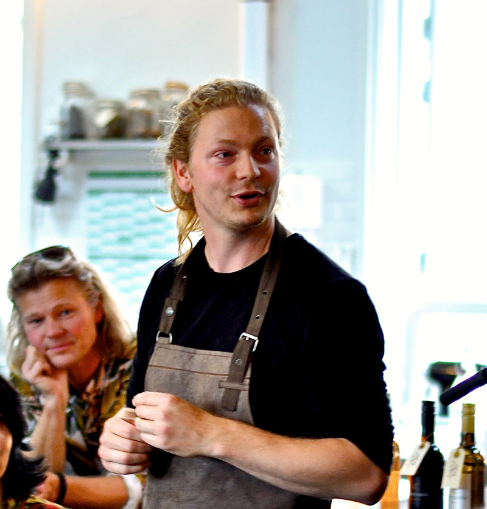
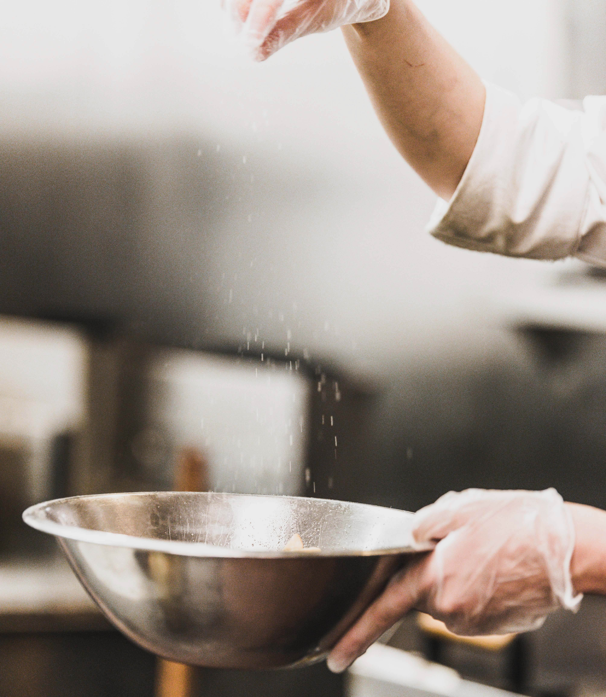
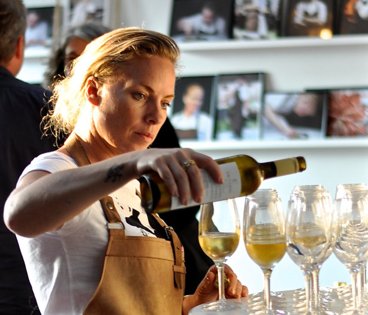

Historien om Gastronomisk Innovation
Sammen hjælper vi jer med kreativ sparring og sikrer kvaliteten, så jeres arrangement bliver noget særligt og kommunikationsindsatsen rammer plet.Netværket er stort. Vi kender branchen og samarbejder med en lang række af kokke, der alle har baggrund i toprestauranter herhjemme og i udlandet.Gastronomisk Innovation har samtidig et netværk af nogle af landets bedste og skarpeste kommunikatører, fotografer og værtinder.Gastronomisk Innovation er grundlagt i 2013 af Dorte Leck Fischer. Dorte havde mange års erfaring med netop gastronomisk udvikling på mange fronter samt projektledelse af større madevents både herhjemme og internationalt. Dorte Leck Fischer døde af kræft den 14.
Rasmus Leck Fisher
Med en fortid på Søllerød Kro, den 3-stjernede Michelinrestaurant Martin Berasategui i Baskerlandet og Dragsholm Slot er Rasmus Leck Fisher en alsidig kok. Til daglig står Rasmus som køkkenchef bag gryderne på Gastronomisk Innovation. Her laver han workshops, Private dining og leverer opskrifter til blandt andre månedsmagasinet GASTRO. Rasmus er forfatter til de anmelderoste kogebøger UKRUDT, SNAPS (naturen på flaske) og INSECTIVORE. Her sætter Rasmus ord og opskrifter på sin store passion for naturens mangfoldige spisekammer, som man selv kan gå på opdagelse i. Rasmus er også medstifter af NACL, som er en sammemslutning af talentfulde kokke, der på bedste rock’n’roll-vis laver innovative madevents i ind- og udland.
Morten Henningsen
Med en fortid på Søllerød Kro, den 3-stjernede Michelinrestaurant Martin Berasategui i Baskerlandet og Dragsholm Slot er Rasmus Leck Fisher en alsidig kok. Til daglig står Rasmus som køkkenchef bag gryderne på Gastronomisk Innovation. Her laver han workshops, Private dining og leverer opskrifter til blandt andre månedsmagasinet GASTRO. Rasmus er forfatter til de anmelderoste kogebøger UKRUDT, SNAPS (naturen på flaske) og INSECTIVORE. Her sætter Rasmus ord og opskrifter på sin store passion for naturens mangfoldige spisekammer, som man selv kan gå på opdagelse i. Rasmus er også medstifter af NACL, som er en sammemslutning af talentfulde kokke, der på bedste rock’n’roll-vis laver innovative madevents i ind- og udland.
Gin Isabel
Har mange års erfaring som restaurantchef og er uddannet tjener og sommerlier. Det er Gin, der er projektleder på arrangementerne i Gastronomisk Innovation. Gin står for sparring i planlægningen og sikrer en både professionel og personlig afvikling af arrangementerne. Med en fortid som chefsommerlier på Nimb og restaurantchef for Nimb Brasserie, Madklubben og Færgekroen er Gin vant til at have overblikket hele vejen rundt.